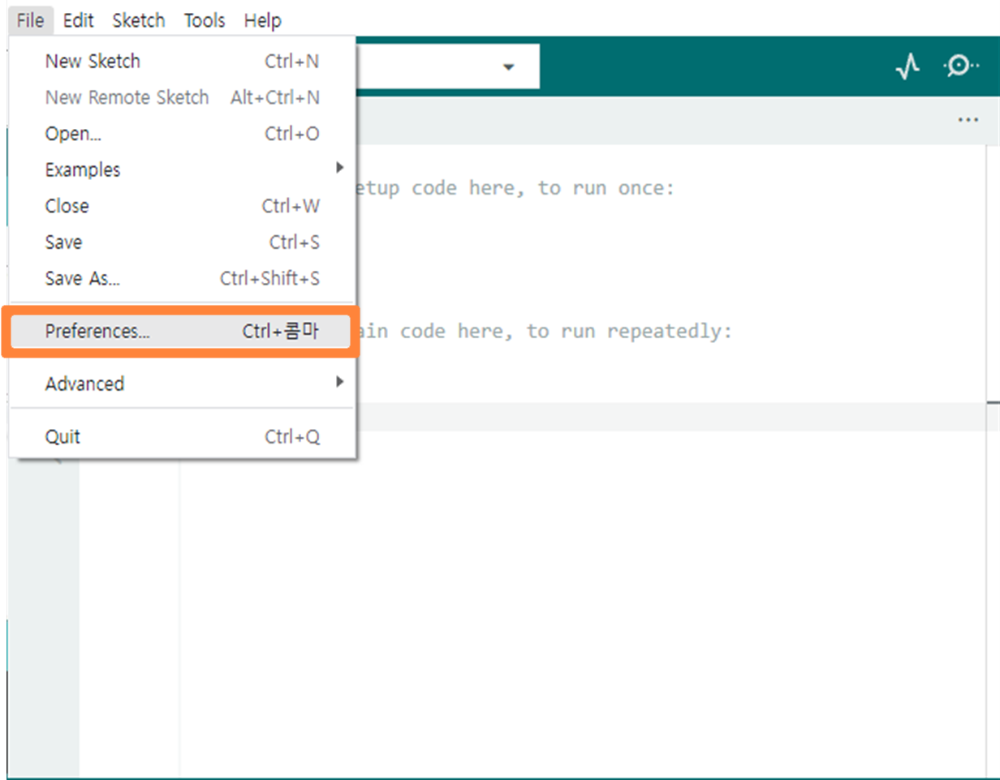
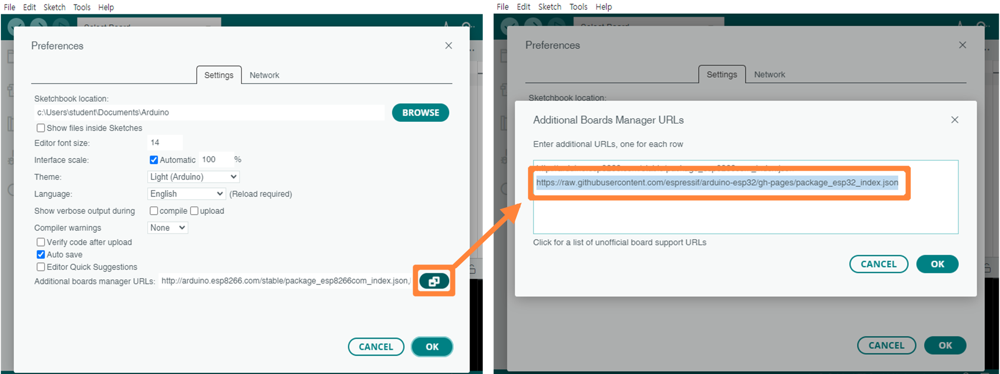
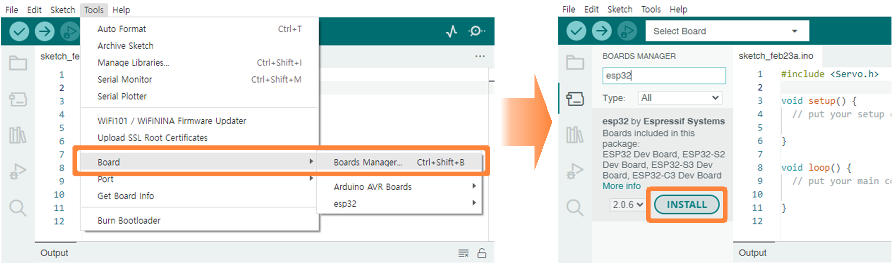
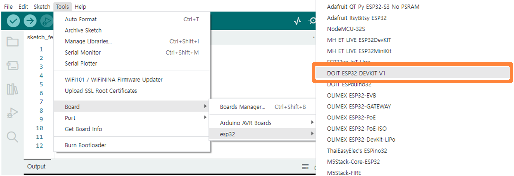
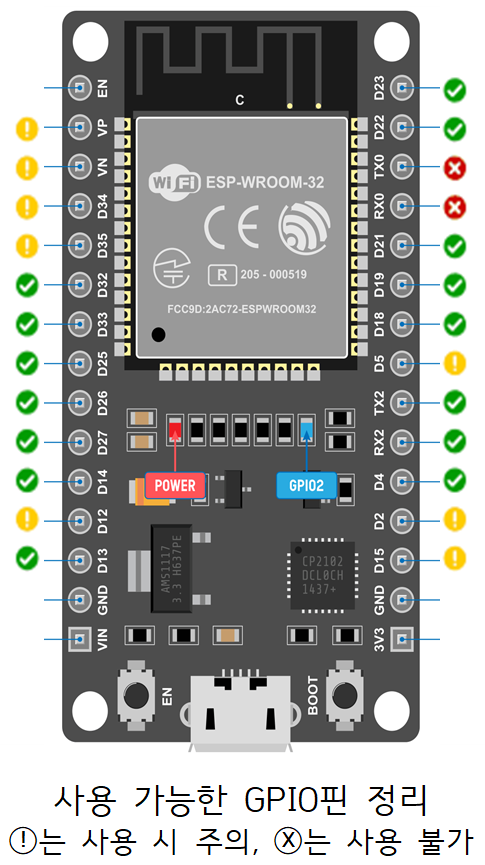
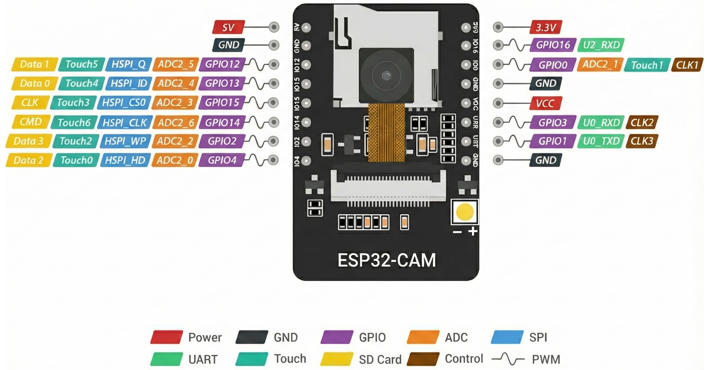
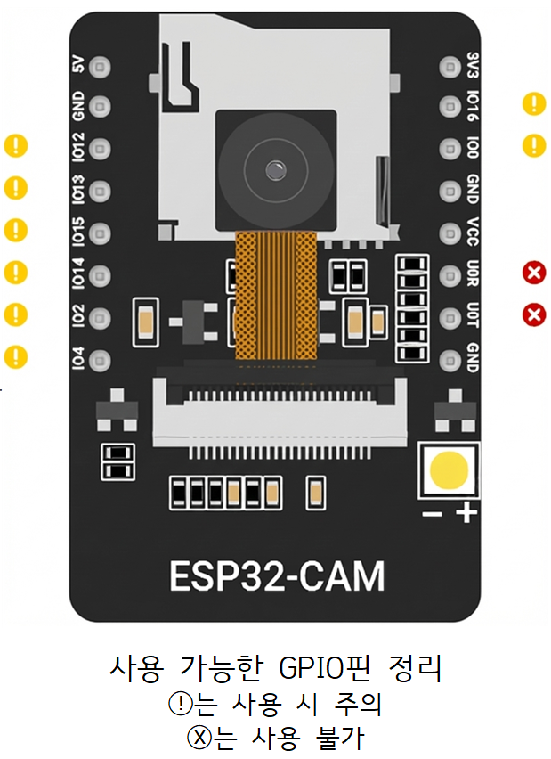

Arduino 개발도구(IDE)에서 ESP32 보드 사용 설정
1. Arduino 개발도구를 이용한 설정 방법
- File > Preferences를 클릭합니다.  Preferences 메뉴" class="step-img" style="max-width: 75%;">
-
Additional Board Manager URLs의 오른쪽 아이콘을 클릭하고, 아래 주소를 추가한 후 OK를 누릅니다.

https://raw.githubusercontent.com/espressif/arduino-esp32/gh-pages/package_esp32_index.json -
Tools > Board > Boards Manager를 클릭합니다. 검색창에
esp32를 검색하여, ESP32 by Espressif Systems를 찾아 그 아래의 Install을 클릭합니다.⚠️ 주의! 반드시 프로젝트에 맞는 버전(2.0.17 혹은 3.1.3 버전)을 선택하여 설치해주세요!
 - Tools > Board 메뉴에서 가지고 있는 ESP32의 모델을 찾아 클릭하고, Tools > Port 메뉴에서 ESP32가 연결된 포트를 선택합니다. 
주의 사항
ESP32는 Arduino와 기본 명령어(
pinMode, digitalWrite, digitalRead 등)는 동일하나, Wi-Fi, Servo 모터 등의 명령어는 다르므로, Sketch > Include Library > Manage Libraries에서 해당 라이브러리를 찾아 등록해야 합니다.
2. ESP32 핀배열 (Pinout)
ESP32는 Arduino와 핀배열이 다릅니다. DOIT ESP32 DEVKIT 30핀 기준으로 다음과 같습니다.

가. GPIO (General-Purpose Input/Output) 상세 안내
디지털 입출력 핀으로 입력 및 출력이 가능합니다. 단, 목적이 정해진 핀이 있어 주의해야 합니다.
| 구분 | 해당 핀 (GPIO) |
|---|---|
| 사용 가능 핀 (제약 없음) |
GPIO 4, 13, 14, 16~33 |
| 내부 LED 연결 | GPIO 2 |
| 입력 전용 (Read-Only) | GPIO 34~39 |
| 플래시 메모리 전용 (사용 불가) |
GPIO 6~11 |
▼ 사용 가능한 GPIO 핀 정리

나. ADC (Analog to Digital Converter)
아날로그 신호를 디지털로 변환해주는 핀입니다. 0V~3.3V를 0~4095까지 총 4096단계로 변환하며, Arduino의 analogRead에 대응합니다.
다. PWM (Pulse Width Modulation)
디지털 신호의 펄스 폭을 조절하여 제어합니다. analogWrite(최근 지원) 혹은 ledcWrite(기본 지원)를 사용하며 서보 모터 제어 등에 사용됩니다.
3. ESP32-CAM 핀배열
ESP32-CAM은 일반 ESP32와 핀배열이 다릅니다. (16핀 기준)
아래 GPIO 핀으로 입출력 하면 되지만, GPIO 0, 1, 3은 컴퓨터와 연결 시 사용되므로 사용하지 않는 것이 좋으며, 주의해야 할 핀이 많으므로 확인이 필요합니다.
가. GPIO (General-Purpose Input/Output)
| 구분 | 해당 핀 (GPIO) |
|---|---|
| SD 카드 공유 핀 (SD 미사용 시 사용 가능) |
GPIO 2, 4, 12, 13, 14, 15 |
| 내부 LED 및 플래시 |
GPIO 4: 전면 플래시 LED (SD카드 데이터 핀과 공유) GPIO 33: 후면 작은 빨간색 LED |
| 업로드 및 통신 (UART) |
GPIO 1 (TX0), GPIO 3 (RX0): 코드 업로드/디버깅 GPIO 16 (RX2): 수신 전용 (단, PSRAM/카메라 사용 시 불가) |
| 부팅(Strapping) 핀 (부팅 시 전압 주의) |
GPIO 0: 부팅 시 HIGH (LOW면 업로드 모드) GPIO 2: 부팅 시 LOW GPIO 12: 부팅 시 LOW GPIO 15: 부팅 시 HIGH |
| 카메라/PSRAM 전용 (사용 불가) |
GPIO 5, 18, 19, 21, 22, 23, 25, 26, 27, 32, 34, 35, 36, 39 |
▼ ESP32-CAM 사용 가능한 GPIO 핀 정리
